――― 岡 田 自 観 師 の 論 文 集 ―――
A Story of Ukiyo-e
FOREWORDI have been a lover of painting since boyhood. It has always been a delight for me to visit exhibitions and collections, as well as to collect for myself. Last year I built a small art museum at Hakone, to exhibit art works of various kinds. This caused me to pay due attention to Ukiyo-e, in which, I must confess, previously I had not had much interest. Ukiyo-e aroused my enthusiasm, and the interest has gradually increased ever since. It offered me a source of delight, of a kind I had not found in other types of art, so much so, that I have come to regret I had not found it earlier.
I visited last fall an exhibition of ukiyo-e in Kyoto, when I had the luck to be introduced to Mr. Ichitaro Kondo, Director of the Department of Education of the Tokyo National Museum. Mr. Kondo has since been kind enough to instruct me on Ukiyo-e, and to help me in my collection.
My collection has become good enough to organize an exhibition, which, with a certain amount of pardonable pride, I think is a fine one, thanks to the invaluable assistance of Mr. Kondo. I take this opportunity to publish this small book, in order to call more interest in this peculiarly Japanese art among other parts of the world as well as in Japan itself. Mr. Kondo again was kind enough to take charge of editing it.
Mokichi Okada
Director, Hakone Art MuseumMay, 1953
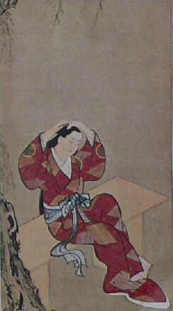 Beauty Under Willow-tree. By Miyagawa Choshun. |
A Story of Ukiyo-e
|
|
|
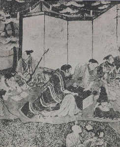 (Portion) Screen-painting "Women in Merriments." Artist unknown. |
Origin of Ukiyo-e The history of Japanese art
covering over thirteen centuries tells that ancient
Japanese paintings, such as scroll-paintings, paintings
on sliding doors and folding screens, and Suiboku
(black-and-white) paintings, were almost entirely arts
for nobles and warrior-class people. This was, in a
sense, inevitable, for the nucleus of Japanese culture in
and before the Middle Ages was formed by the noble and
warrior classes which, of course, were but a small
portion of the society. Commoners could not afford,
either financially or spiritually, to enjoy cultural life. |
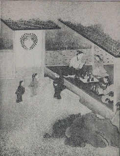 (Portion) Screen with paintings "Various Professions." Artist unknown. |
|
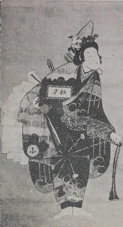 Beauty of Kambun Era. Artist Jlnknown. |
|
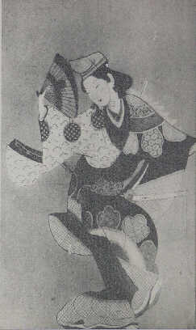 Dancing Beauty of Kambun Era. Artist unknown. |
|
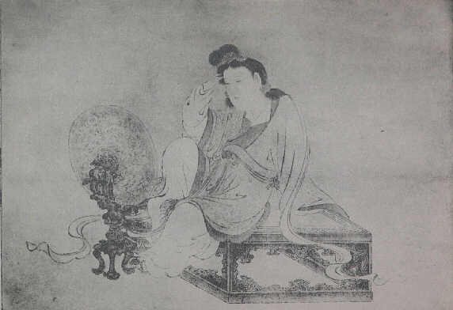 Yang Kuei-fei (Chinese empress of T'ang Dynasty). By Iwasa Matabei. |
|
| Ukiyo-e is defined in various ways.
The word Ukiyo (meaning "floating world ")
included in this term seems to tell that Ukiyo-e ("pictures
of ukiyo") are pictures depicting scenes of popular
enjoyments in the world of common citizenry, which at the
time were chiefly gay quarters and Kabuki play. However,
the landscape prints produced in great quantity in the
end of the Edo Period did not deal with such scenes of
enjoyments. Ukiyo-e in its early period, too, was not
dedicated to subjects from gay quarters and Kabuki
theaters alone. It seems more reasonable to interpret the
term to mean pictures depicting everyday life of
contemporary people, as contrasted with works of the Kano
School artists who treated of Chinese figures or flowers-and-birds,
and of the Tosa School artists devoting themselves to
subjects from such classic literary tales as the Genji
Monogatari and Heike Monogatari. It means
"Pictures of Ukiyo," that is, pictures of
realities as contrasted with pictures of abstract or
classic subjects. |
|
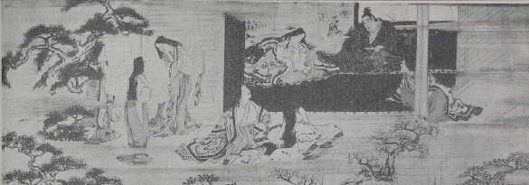 (Portion) Scroll I of scroll-painting "Horie Monogatari." Ascribed to Iwasa Matabei. |
|
| Japanese genre paintings from the
Momoyama to early in the Edo Period developed in the
manner as described above. However, they were paintings
in brushwork on sliding doors, folding screens or Kakemono
(hanging scrolls). Artists and their subject matters
certainly were of the commoner class, but brushwork
paintings are art objects for a limited scope of
priviledged men. There can not be two same paintings. A
same work can not be obtained by two persons. This is not
fair for commoners. In order that a work of art may be
truly for the common people, there should be many copies
so that anyone can obtain one, and moreover its price has
to be always low. To meet these conditions, there could
be no other way than to produce many copies by print. Hishikawa Moronobu, an artist from Hoda in Awa Province (now Chiba Prefecture) who went up to Edo when young, produced the first Ukiyo-e in wood-cut printing. Scenes of the gay quarters at Yoshiwara, scenes or actors of Kabuki play, and other such subjects found in everyday life of commoners were reproduced by him for the first time in woodcut printing, the demotic form of art in mass-production for the common people. Moronobu, the son of a mere embroidery artizan from a nook of the country, suddenly got high fame, and became the founder of Ukiyo-e art. |
|
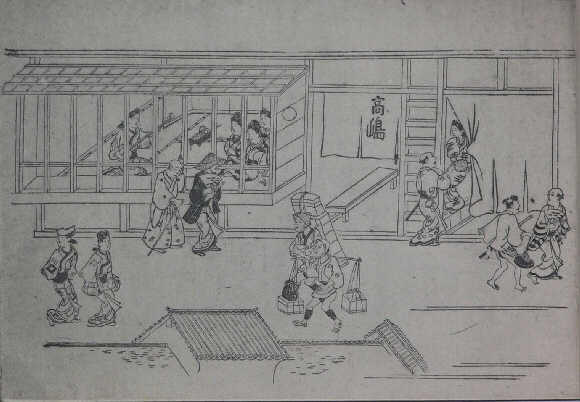 Street Scene at Yoshiwara. Woodcut print, by Hishiknwa Moronobu. |
|
| It has been said that the founder
of Ukiyo-e was Iwasa Matabei. This legendary ascription
has been disproved by scholars, but is still believed by
many of the public. The problem had long been argued
since 1897, and no scholar now believes that Matabei was
the founder of Ukiyo-e. There does not exist a single
piece of Ukiyo-e among his existing works. There are
quite a number of pictures portraying beauties in his
peculiar style, with long, full cheeks, but they are all
figures connected with ancient Japanese literature. He
was an artist of the Tosa School, as he called himself in
the inscription on two of his works. We can not see how
he came to be regarded as the founder of Ukiyo-e. One
theory suggests that it was caused by the confusion with
Domo-no-Matabei, the artist who originated the simple,
popular type of painting called Otsu-e, though the
identity is not fully believable. Works by Iwasa Matabei
usually bear the seal-marks reading "Sho-i,"
"Hekishokyu" or "Do-un," but there
exist some paintings without any seal or signature which
show a style very much like his, such as, for example,
the scroll-paintings "Horie Monogatari" and
"Yamanaka Tokiwa E-maki." It is yet to be
studied whether or not these are genuine works of Iwasa
Matabei. |
|
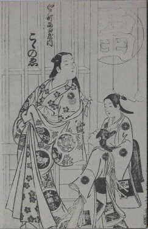 Kokonoe, girl of Nishida-ya House in gay quarters of Edo. Woodcut print, by Hagawa Chinju. |
Development
in the Form of Ukiyo-e Once the new mass-production form,
namely woodcut printing, was invented, later Ukiyo-e came
to be made almost exclusively by this system. The history
of Ukiyo-e for nearly two centuries, from the Genroku Era
(c. 1688) down to the beginning of the Meiji Era, was no
other than the history of the development of woodcut
prints. During these two centuries, hundreds of Ukiyo-e
artists appeared, and probably millions of Ukiyo-e prints
were produced. There were scores of artists among them
who were skilled in brush painting, such as: Hishikawa
Moronobu, Kaigetsudo Ando and Miyagawa Choshun in the
early period of Ukiyo-e; and Katsukawa Shunsho, Chobunsai
Eishi, katsushika Hokusai and Ando Hiroshige after the
middle. Some of these artists worked in brushwork besides
specializing in woodcut prints. There were a great number
of Ukiyo-e artists who never painted in brushwork, but
there were not many more than ten who never made prints.
They were Kaigetsudo Ando, and his pupils excepting Dohan
and Doshin, and Miyagawa Choshun and his pupils. |
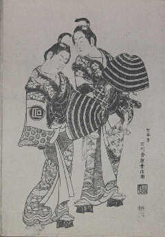 Monk and Nun. Woodcut print, by Ishikawa Toyonobu. |
|
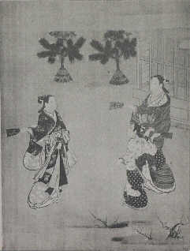 (Portion) Hane-tsuki (Battledorc and shuttlecock). By Miyagawa Choshun. |
|
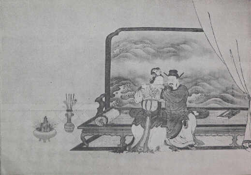 Hsuean-tsung and Yang Kuei-fei (Chinese emperor of T'ang Dynasty and his consort). Woodcut print, by Suzuki Harunobu. |
|
| The third was the discovery of the
beauty peculiar to prints. The sharp, elastic lines
produced by engraving with a knife can never be drawn
with a brush. A beauty of a kind entirely different from
that of drawn lines was discovered in prints. Colours,
too, showed a new kind of beauty. The effect of colours,
produced by rubbing a sheet of paper placed on a colour-painted
wood-block, was absolutely different from that of brush-painted
colours. As will be discussed later, the beauty of the
colours of Japanese woodcut prints is unrivalled among
prints of the world. Prints of other countries are mostly
in black monochrome, the colours put by brushwork. China
has colour prints, but they are printed in only a few
colours. It is in Ukiyo-e prints alone that pictures are
printed in more than ten colours. The method of such
polychrome printing was a purely Japanese invention. The
peculiar beauty of colours in Ukiyo-e owed much to the
quality of the paper used, especially the hosho
paper of thick, soft quality. Colours printed on this
kind of paper produce a mild, delicate and serene tone. The print form of Ukiyo-e thus created beauty of a kind never found in brush painting, or in prints in other parts of the world. Probably this was the most important reason why Ukiyo-e artists gave up brush painting and devoted themselves to woodcut prints. However, the first woodcut prints made by Moronobu were not printed in such beautiful colours. Older prints were in black monochrome, and that in contours only. This monochrome prints were called Sumizuri-e, meaning "black-printed-pictures." To the artists of Kyoto, where they were familiar with the colourful brush paintings, such somber prints in black monochrome must have appeared unworthy to be called works of art. This was one of the reasons why woodcut printing did not flourish in Kyoto. Edo, on the other hand, did not have tradition in art. Black monochrome printing was certainly poor-looking, but it was in the spirit of citizens of Edo to maintain and promote this new form of art. Woodcut printing was destined to be the special product of Edo. |
|
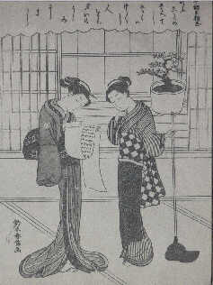 Mitate Kanzan Jittoku (two girls, in travesty of two Chinese priests, Han-shan and Shih-te). Woodcut print, by Suzuki Harunobu. |
Prints in black monochrome, however
cheap, were not entertaining enough. Artists had the idea
to put a few colours, such as cinnabar or violet, in
brushwork inside the black-printed contours. This was the
Tan-e, meaning "cinnabar pictures." Specimens
of this kind are found in works by Moronobu, Torii
Kiyomasu the First and other early artists. It was the
outcome of the desire to bring the effect of brush
paintings on prints. The Tan-e had a remarkable development from the end of the seventeenth to the beginning of the eighteenth century. The newly developed form was the Beni-e ("rouge-red pictures"), otherwise called Urushi-e ("lacquer-black pictures"). The Beni-e had red instead of cinnabar, as well as several other colours such as yellow, green and purple, all in brushwork. Some of later Beni-e had black portions in glossy black like the black of lacquer, produced by mixing glue in the black colour. This type was specifically called Urushi-e. The Beni-e (or Urushi-e) at first were coloured in a very simple manner, but later on they began to be painted elaborately in many colours. More elaborate processes came to be required. The increase of elaborateness in brushwork colouring meant the loss of the most important merit of Ukiyo-e prints, the life of which was mass-production for multitude. The elaboration of Urushi-e by Okumura Masanobu, okumura Toshinobu, Nishimura Shigenaga and other artists of the Kyoho Era (1716-1735) accelerated the downfall of Ukiyo-e as popular art. In the early 1740's, inspired by Chinese prints in two or three simple colours, Ukiyo-e artists devised a technique of colour printing. This was the second important development in Ukiyo-e. Pictures of this sort at first were simple ones in two colours, red and green, called Benizuri-e (red-printed-pictures). For the first time Japanese woodcut prints came to be printed in colours, eighty years after the beginning of Ukiyo-e prints by Moronobu. The period of Benizuri-e lasted for about twenty years, until Nishiki-e or polychrome printing was invented. Woodcut printing had the third, and final, development in 1765. It was the invention of polychrome printing, called Nishiki-e (brocade-picture), nishiki here meaning colourful. Ukiyo-e prints are otherwise called Edo-e or Nishiki-e. The term Edo-e was derived from the fact that Ukiyo-e prints became the special product of Edo. Nishiki-e, in the strict sense of the word, means polychrome prints after 1765. It is not right to call the older types of prints, namely Sumizuri-e, Tan-e, Urushi-e and Benizuri-e, by the term Nishiki-e. Nishiki-e means beautiful colour prints, beautiful as brocade. It was a vogue among dilettantes in the New Year of 1765 to exchange smart gifts of their own original designs. A few poets of haikai, the Japanese seventeen-syllable poetry, designed pictures, and had them drawn for woodcut printing by the Ukiyo-e artist, Suzuki Harunobu, and exchanged the printed pictures as New Year's gifts. The polychrome printing method was invented by Harunobu on this occasion, by improving the technique of Benizuri-e. This was the beginning of Nishiki-e. The Ukiyo-e prints, unlike prints of other countries, are not drawn and printed by a single artist. A print is produced by the cooperation of three persons, the artist, the engraver, and the printer. At first the artist alone signed on prints. The names of the engraver and the printer never appeared on them. Among the prints made in 1765, however, there were some which bore the names, besides that of the artist Harunobu, of the Engravers So-and-so and the Printers So-And-so. This was an exceptional system at the time, and it meant that the new form of Nishiki-e was a great renovation not only in the artistic style but in the manners of engraving and printing as well. The names of engravers and printers, inscribed manifestly on the pictures, were the monuments, so to speak, of this epoch-making event in the history of Ukiyo-e. Colour prints previously were in two colours, red and green. The Nishiki-e succeeded in printing in a few more colours, and later in as many as fifteen or sixteen colours. It became possible to print a colour on another colour, or to print in intermediate or halt-tone colours. Previously, all things in prints, either human figures or animals or landscapes, had been presented in the two colours. There was no consistency between objects and colours. Nishiki-e for the first time gave objects their true colours. This was an extremely significant reform in colours of Ukiyo-e. The development of Ukiyo-e after 1765 was no other than the development of elaborateness: there was no fourth renovation, as far as the form of printing was concerned. The perfection of Nishiki-e was a summit of the form of Ukiyo-e. |
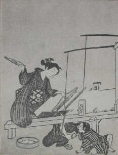 Weaving. Woodcut print, by Suzuki Harunobu. |
|
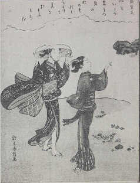 Beauties on the Shore. Woodcut print, by Suzuki Harunobu. |
|
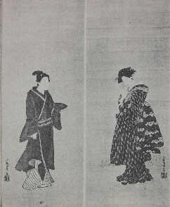 A Couple. Woodcut print, by Isoda Koryusai. |
|
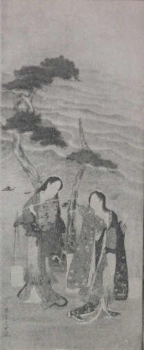 Shio-kumi ("Drawing Sea-water," a dance). Woodcut print, by Katsukawa Shunsho. |
|
| Styles And Subjects in
Ukiyo-e The origin of Ukiyo-e was in the
desire for artistic representation of popular enjoyments
of commoners. It originated in the demand of citizen of
Edo, who, unsatisfied with paintings of Chinese figures
or classical literary subjects, wanted to find in art
something more familiar in their actual life. Their chief
enjoyments were in Yoshiwara, the gay quarters of Edo,
and in Kabuki theaters. It was natural that the subject
matters for Moronobu and other early artists should have
been women of Yoshiwara or actors of Kabuki. Subjects of
early Ukiyo-e were. limited to beauties and Kabuki actors－no
landscapes or flowers-and-birds were dealt with. Artists
did not have specialities as later artists did, some
specializing in beauties, some in actors, etc. Artists
working chiefly with actors also depicted beauties, and
those experienced in beauties also made portraits of
actors. This phenomenon was conspicuous especially in the
periods of Sumizuri-e and brush-coloured monochrome
prints. Pictures of actors and pictures of beauties did
not show distinct difference in style. |
|
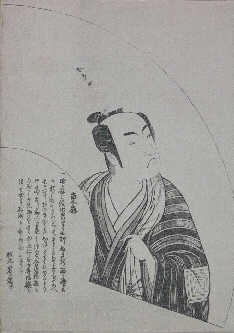 Actor Ichikawa Monnosuke: from the series "Azuma Ogi." Woodcut print, by Katsukawa Shunsho. |
Kaigetsudo Ando, with his more than
ten pupils, lived at Asakusa (near Yoshiwara) in Edo, and
painted many portraits of women of Yoshiwara in brushwork.
His beauties were always in a fixed form, depicting them
in a Standing pose, and in side-views either from the
right or from the left, the figure in a sort of S-shape
with the stomach projecting foreward. The term "Kaigetsudo
beauties" will immediately remind us of women in
this style. The contour lines are greatly fluctuating in
breadth like in brush painting, and the colours are
bright and deep. Artists of the school of this Kaigetsudo
Ando always depicted beauties in this similar pose, and
never tried to create a new style. Such making of similar
paintings, although in brushwork, was a sort of mass-production.
It had the same purpose as prints. Presumably they were
produced to the demand of a part of citizens of Edo, who
were not satisfied with the cheap but poor-looking prints.
They may be understood to be products of a transitional
epoch in which woodcut prints had not yet created the
original beauty of prints. Beauties in brushwork were the speciality also of Miyagawa Choshun and men of his school, such as Miyagawa Issho, Miyagawa Seiko and Miyagawa Choki. Beauties of this school were less "gorgeous" and more "pretty" than those of the Kaigetsudo School. In age they were somewhat later, probably covering from the Kyoho Era (1716-1735) to the Horeki Era (1751-1763). Prints in this period were represented by Urushi-e then at the height of prosperity. They were creating a beauty different from that of brush paintings. Demand for portraits of Kabuki actors increased more and more among citizens, and prints came to secure its raison d'etre as far as portraits of actors were concerned. Actor portraits of this period, such as by the Torii School artists, Okumura Masanobu or Nishimura Shigenaga, were not realistic enough to reproduce the characteristics of individual actors. Faces were all similar in a kind of fixed form, so that one could not tell who the depicted actors were by the faces alone. Actor portraits in the period of Urushi-e, therefore, always had the names of the actors and their roles in dramas inscribed in the pictures. Otherwise the owner of a portrait could not have known whose portrait it was. This was not the case with actor portraits alone. Prints depicting beauties also were similar to one another, and moreover there were styles in common among different artists. Beauties by Okumura Masanobu and those by Nishimura Shigenaga are very much similar. Beauties by Torii Kiyonobu the Second and those by Okumura Masanobu also are extremely like each other. Styles of artists are common among them. Artists do not have their distinctive styles. The same can be said about portraits of actors, and there are even cases in which it is hard to tell whether a picture is of a beauty or of an actor. A picture appearing like a beauty may occasionally be a portrait of an oyama or Kabuki actor playing the role of a girl. All actor portraits are similar, all beauties are similar, and actors and women are similar. This is an important characteristic of early Ukiyo-e prints. As discussed before, the art of Ukiyo-e had an epoch-making development in 1765. The perfection of polychrome woodcut printing, well worth being called the pride of Japan, created beauty of a kind totally different from that of brush painting. Prints were no longer under the way of brush paintings, and came to have their own original style. Specialization in subjects, namely actors and beauties, was secured. Suzuki Harunobu held high fame as an artist devoted to beauty depiction. Katsukawa Shunsho and Ippitsusai Buncho dealt exclusively with actors alone, and secured their positions in this field side by side with Torii School artists. Beauties in prints at first used to be depicted alone, without any background showing the interior of their houses. After the time of Harunobu they came to have backgrounds depicted in detail, presenting them in connection with their daily life. Actor portraits came to be down with realistic depiction of their facial characteristics, so much so that it became no longer necessary to inscribe the names and roles of the actors depicted. This meant the success of Nigao-e ("likeness-pictures"). Beauties by Harunobu were lovely and chaste like dolls. He depicted these figures of sentimental beauty in romantic scenes of love. His prints were rendered with the life and milieu of women. It was a new aspect of art never found in prints prior to the Benizuri-e. Once Harunobu got high popularity among citizens of Edo, all other contemporary artists began to imitate his style. Even such artists without any relationship in art with Harunobu, as Isoda Koryusai, Komai Yoshinobu, Shiba Kokan, Ippitsusai Buncho and Katsukawa Shunsho, reproduced the Harunobu style in their pictures of beauties and actors. The lack of individuality, like in the period of Urushi-e, showed again among Ukiyo-e artists of this epoch. The fact that even Katsukawa Shunsho and Ippitsusai Buncho, specializing in portrayal of actors, were influenced by the Harunobu style, shows the character of Ukiyo-e intrinsic in it. What was the cause that brought on this character? Presumably it was the pressure by publishers, and the lack of artistic conscience on the part of artists themselves. If Harunobu, for instance, gets great popularity, publishers force other artists to work in the style of Harunobu. Ukiyo-e artists were at the mercy of people's fancy. They had to respect the demand of publishers and citizens at the cost of their own style, in order to maintain their living and popularity. Although having freed itself from the sway of brush painting in style, and become diversified in specialized subjects, the art of Ukiyo-e in this period was not much different from that of the period of Urushi-e in the fundamental lack of individuality. After the death of Harunobu in 1770, his spell on Ukiyo-e which had limited the style of other artists dispersed for a while. Artists, from about the following year, began to work in their respective original styles. It may have been a resistance against Harunobu's romanticism which had outrivalled them. Beauties depicted by them lost the frail loveliness and became fleshy and healthy-looking. The realistic presentation of beauties by Isoda Koryusai, Kitao Shigemasa, Kitao Masanobu, and Torii Kiyonaga, active in the An-ei Era (1772-1780), was a sort of revolt against the dream-like atmosphere of Harunobu. Out of these rivalling artists each with his own style, Torii Kiyonaga gradually raised his head, and finally brought about a period of his Predominance. Though a man of the Torii Family specializing in actor portrayal, he for a certain reason almost never made pictures of actors. His favourite subject was women in a group. which he depicted in flowing lines and bright colours. He was not satisfied with the usual paper size of about 39 cm. by 26 cm., but created a large space consisting of three separate sheets of this size with continued pictures. Beauties by Kiyonaga were full of sensuous beauty. This new type of beauty again came to pervade over the world of Ukiyo-e. Ukiyo-e of the Temmei Era (1781-1788) was monopolized by the Kiyonaga style. Katsukawa Shunsho, Katsukawa Shuncho, Chobunsai Eishi, and Kitagawa Utamaro still in his youth, could not be free from Kiyonaga's influence. Kitagawa Utamaro, however, was a man of unyielding spirit. Submerged in the flood of the Kiyonaga style he secretly studied the styles of preceding artists, looking foreward to future success. In 1791, at the age of thirty-nine, he created an unprecedented form of beauty depiction, and presently displaced Kiyonaga. It was the invention of the form called Okubi-e, meaning "large-head-picture." Pictures of beauties in the preceding period were presented in full length, and in groups. Utamaro left out the lower half, and showed the head and upper half of the body in close-up. His intention was to reproduce the beauty of women by enlarged and emphasized depiction of the face. It was an entirely new viewpoint of female beauty. Chobunsai Eishi and his pupils Eisho, Eisui and Eiri, as well as many minor artists of the Kansei Era (1789-1800), again followed the style of Utamaro. In actor portraits, on the other hand, the Nigao-ei or likenesses of actors originated by Katsukawa Shunsho which were really like respective actors, overpowered the formalism of the Torii School. Shunsho's art cultivated a new field in portrayal of actors. It seems that Shunsho in his late years developed an original style in brush paintings of beauties. There exist a good many fine works of this sort. It was the art of Toshusai Sharaku that brought to perfection the realism of Nigao-e by Shunsho and his pupils, Shun-ei and Shunko. Almost nothing is known about the life and career of Sharaku. The period of his activity was only ten months, from May of 1794 to February of 1795. During this period the mysterious artist produced about a hundred and forty portraits of actors. His whereabouts after that is totally unknown. These comparatively few works, however, had high artistic value with which they astounded present-day artists of the world. They reproduced instantaneous expressions of actors on stage with astonishing strength by impressionistic depiction of eyes, noses, mouths and hands. His art was a drastic impressionism. It was high aloof from other artists, but his too much distinctive style did not find a man to inherit it. The art of actor portrayal of the Shunsho School was transmitted rather to the modest style of Utagawa Toyokuni. Toyokuni published, from about 1794 or 1795, a series of about twenty portraits of actors entitled "Pictures of Actors on stage." They are masterpieces skilfully reproducing the characteristics of respective actors and their roles within fine formalistic beauty. They are not only the representative works of Toyokuni's art, but are supreme works in the history of Ukiyo-e in this field. His later works could never surpass this series. The Kansei Era (1789-1800) was the golden age of Ukiyo-e. In the depiction of beauties there were such geniuses as Kitagawa Utamaro, Chobunsai Eishi and Kubo Shumman. In the portrayal of actors there were the distinguished talents, Sharaku and Toyokuni. Ukiyo-e reached a summit in this period both in style and in technique. After this period these great talents passed away one after another, and the art of Ukiyo-e in both fields was on the decline. Ukiyo-e in the Bunka-Bunsei Eras (1804-1829) and afterwards, was represented by Keisai Eisen, Utagawa Kunisada and Utagawa Kuniyoshi, but the glory of the Kansei rperiod was not restored. Ukiyo-e both of actors and of beauties came to dead stand. A change of front, so to speak, was necessary. |
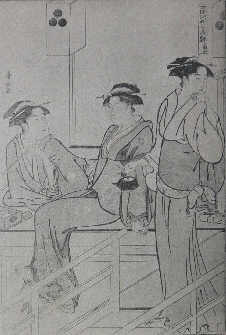 CoolEvening by Riverside at Shijo. Woodcut print, by Tori-i Kiyonaga. |
|
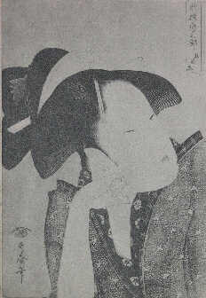 Mono-omou Koi (Love in Reverie): from the series "Kasen Koi-no-bu." Woodcut print, by Kitagawa Utamaro. |
|
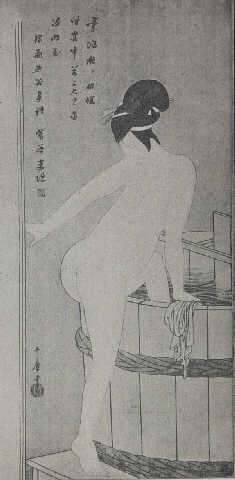 Beauty Bathing. By Kitagawa Utamaro. |
|
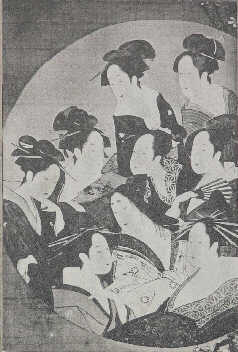 Nine Beauties by the Round Window. By Hosoda (Chobunsai) Eishi. |
|
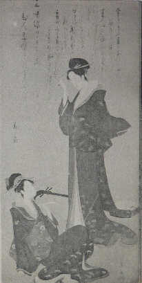 Beauties. By Hosoda (Chobunsai) Eishi. |
|
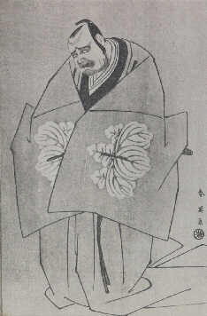 Ko-no-Moronao (a character in a Kabuki drama). Woodcut print, by Katsukawa Shun-ei. |
|
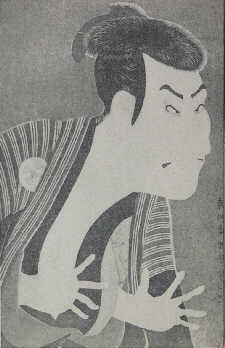 Actor Otani Oniji as Edohei. Woodcut print, by Toshusai Sharaku. |
|
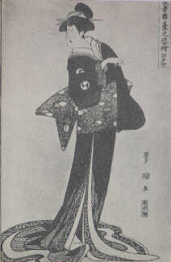 Actors on Stage. Aseries of woodcut prints, by Utagawa Toyokuni. |
|
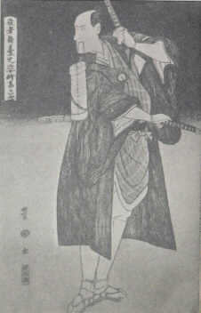 Actors on Stage. Aseries of woodcut prints, by Utagawa Toyokuni. |
|
| The genius who presented himself at
this turning point was Katsushika Hokusai. He at first
learned from Katsukawa Shunsho, and specialized in
portraits of actors. Later he changed his pet subject to
beauties, which he depicted in the Utamaro style. This he
again gave up early in the Bunka Era (1804-1817) and
cultivated an entirely new field of Ukiyo-e. It was
landscapes. Ukiyo-e originally began with the depiction
of popular enjoyments. It successfully reproduced human
life, but had little interest in nature. Hishikawa
Moronobu and Nishimura Shigenaga had landscapes, it is
true, but they were imitations of Toga School landscapes
if not sight-seeing pictures, so to speak. They were not
reproductions of real natural sights. Utagawa Toyoharu
made some landscapes, too, but his were not realistic
sketches from nature. The above-mentioned were not worth
being called true landscapes. Hokusai created a new type of landscape art, inspired by the Western-style copper-plate prints then fashionable. It was not the idealistic landscape of the Toga School, but was the faithful reproduction of natural sights with which citizens of Edo were familiar. He devoted his great talent to this new held. and finally completed, at sixty-nine. the undying masterpieces, "Thirty-six Views of Mt. Fuji," in a series of forty-six pictures. They depicted the "sacred mountain" of Japan from all possible distances and angles of sight, dotted here and there with pictures of the life of common people. The efforts of Hokusai brought a period of great prosperity of landscape prints. His greatest successor was the famous Ando Hiroshige. Keisai Eisen and Utagawa Kuniyoshi, at first specializing in beauties, also followed in his wake. Hiroshige was a man of character entirely different from that of Hokusai. Hokusai was rational and realistic, while Hiroshige was poetic in his depiction of the beautiful nature of Japan. He favourably treated the beauty of nature in various weathers, rainy, windy, foggy or snowy, in a pathetic atmosphere as a traveller might feel far from his home. It may be said that Ukiyo-e landscape of purely Japanese taste was perfected by Hiroshige. |
|
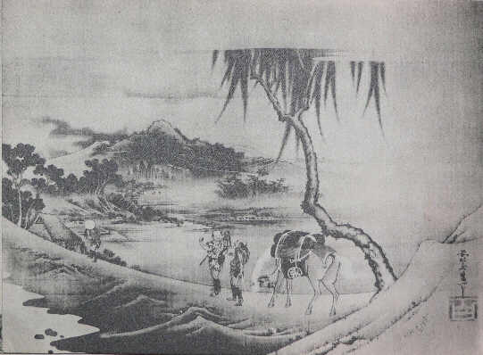 Landscape. By Katsushika Hokusai. |
|
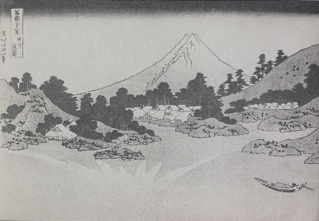 Mt. Fuji Reflected in Water at Misaka in Kai Province: from the series "Thirty-six Views of Mt. Fuji." Woodcut print, by Katsushika Hokusai. |
|
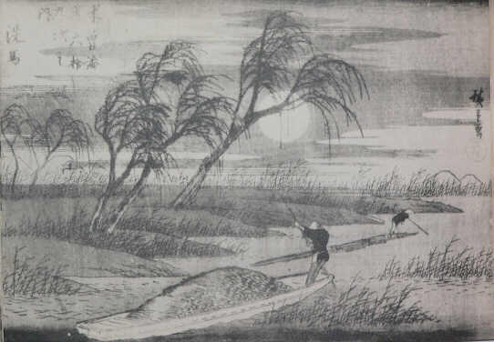 Seba: from the series "Sixty-nine Stages on the Kiso Kaido Highway." Woodcut print, by Ando Hiroshige. |
|
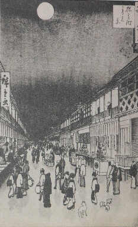 Night Scene at Saruwaka-cho: from the series "Hundred Famous Places in Edo." Woodcut print, by Ando Hiroshige. |
Characteristics of Ukiyo-e The history of Ukiyo-e covering two
and a half centuries tells that Ukiyo-e, from its very
beginning to the last end, never separated itself from
the real life of man. Even landscapes were reproductions
of nature inseparably connected with man. They have the
"smell" of man always pervading over them.
Ukiyo-e never existed apart from man and man's life. What
the hundreds of Ukiyo-e artists pursued was the aspects
of man in respective periods, and what was expressed in
their art was the beauty of man. These were not painted
with the brush on silk, but were reproduced on the wood-block
with a knife and a rubbing implement. |
LIST OF PLATES
| Cover: | Yuna (women of gay quarters). Artist unknown. |
| Page 1 | Beauty Under Willow-tree. By Miyagawa Choshun. |
| 2 | (Portion) Screen-painting "Women in Merriments." Artist unknown. |
| 3 | (Portion) Screen with paintings "Various Professions." Artist unknown. |
| 4 | Beauty of Kambun Era. Artist Jlnknown. |
| 5 | Dancing Beauty of Kambun Era. Artist unknown. |
| 6 | Yang Kuei-fei (Chinese empress of T'ang Dynasty). By Iwasa Matabei. |
| 7 | (Portion) Scroll I of scroll-painting "Horie Monogatari." Ascribed to Iwasa Matabei. |
| 8 | Street Scene at Yoshiwara. Woodcut print, by Hishiknwa Moronobu. |
| 9 | Kokonoe, girl of Nishida-ya House in gay quarters of Edo. Woodcut print, by Hagawa Chinju. |
| 10 | Monk and Nun. Woodcut print, by Ishikawa Toyonobu. |
| 11 | (Portion) Hane-tsuki (Battledorc and shuttlecock). By Miyagawa Choshun. |
| 12 | Hsuean-tsung and Yang Kuei-fei (Chinese emperor of T'ang Dynasty and his consort). Woodcut print, by Suzuki Harunobu. |
| 13 | Mitate Kanzan Jittoku (two girls, in travesty of two Chinese priests, Han-shan and Shih-te). Woodcut print, by Suzuki Harunobu. |
| 14 | Weaving. Woodcut print, by Suzuki Harunobu. |
| 15 | Beauties on the Shore. Woodcut print, by Suzuki Harunobu. |
| 16 | A Couple. Woodcut print, by Isoda Koryusai. |
| 17 | Shio-kumi ("Drawing Sea-water," a dance). Woodcut print, by Katsukawa Shunsho. |
| 18 | Actor Ichikawa Monnosuke: from the series "Azuma Ogi." Woodcut print, by Katsukawa Shunsho. |
| 19 | CoolEvening by Riverside at Shijo. Woodcut print, by Tori-i Kiyonaga. |
| 20 | Mono-omou Koi (Love in Reverie): from the series "Kasen Koi-no-bu." Woodcut print, by Kitagawa Utamaro. |
| 21 | Beauty Bathing. By Kitagawa Utamaro. |
| 22 | Nine Beauties by the Round Window. By Hosoda (Chobunsai) Eishi. |
| 23 | Beauties. By Hosoda (Chobunsai) Eishi. |
| 24 | Ko-no-Moronao (a character in a Kabuki drama). Woodcut print, by Katsukawa Shun-ei. |
| 25 | Actor Otani Oniji as Edohei. Woodcut print, by Toshusai Sharaku. |
| 26 27 |
Actors on Stage. Aseries of woodcut prints, by Utagawa Toyokuni. |
| 28 | Landscape. By Katsushika Hokusai. |
| 29 | Mt. Fuji Reflected in Water at Misaka in Kai Province: from the series "Thirty-six Views of Mt. Fuji." Woodcut print, by Katsushika Hokusai. |
| 30 | Seba: from the series "Sixty-nine Stages on the Kiso Kaido Highway." Woodcut print, by Ando Hiroshige. |
| 31 | Night Scene at Saruwaka-cho: from the series "Hundred Famous Places in Edo." Woodcut print, by Ando Hiroshige. |
A Story of Ukiyo-e
by Ichitaro Kondo
Planned and Supervised by
Hakone Art Museum
Ohtsuka Kogeisha Company. Tokyo
price ￥ 150.―